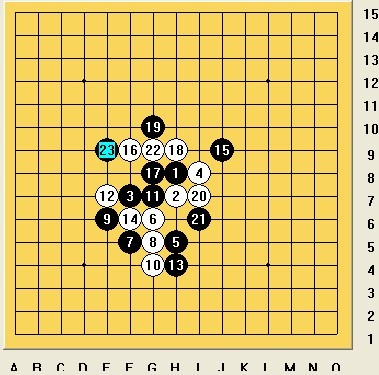
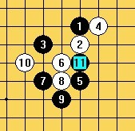
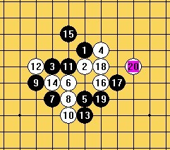
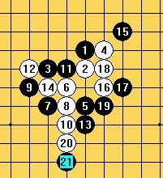

我与曹冬5战—世锦赛模拟训练（上）
#1 我与曹冬5战—世锦赛模拟训练（上） 作者：炫飞冰弦 发表时间：2011-8-14 0:02:24
7 ．25第一战

黑败曹东
今天终于和曹东认认真的面对面下2个小时的棋了，期待已久的正面对决，不禁非常兴奋，浑身热血沸腾，要知道，坐在对面的是中国最强的棋手啊！我的实力到底能不能经得住考验呢？
曹东开局，残月4打，我换了，打算下一个没下过的5，和他拼拼算力。这8最强，9我不想下8下边，变化如下图

就特有创意的走了实战这个9其实算到12之后黑棋并不好下，可是反正没见过，正好可以拼拼算力哈。
真到12的时候我就慌了黑棋实在没什么好下法，例如下图

考虑了各种下法黑棋都会被白棋围住，所以13我盖冲，希望白棋攻错黑棋在后盘寻找机会，这是目前最好的办法了，如果现在就冒进的攻击反而让白棋很快出优势。
这个时候曹东算了将近一小时。走出了实战的必胜，我汗死。。。
下面讲讲曹东的算棋思路，特别值得学习，他是一个一个点算的，没有验算，思路非常清晰，最后算到强点，就算了几个强防觉得不错就走了。
曹东首先否定了这个16.

/*760*90，创建于2012-2-9*/ var cpro_id = 'u761865';
#2 Re:我与曹冬5战—世锦赛模拟训练（上） 作者：小红眼镜 发表时间：2011-8-14 0:29:06
 沙发哈哈。世锦赛前三更半夜看了一眼了俺就去呼叫管理删了~~~
沙发哈哈。世锦赛前三更半夜看了一眼了俺就去呼叫管理删了~~~
#3 Re:我与曹冬5战—世锦赛模拟训练（上） 作者：飛龍在天 发表时间：2011-8-14 10:22:58
这就是传说中的板凳#4 Re:我与曹冬5战—世锦赛模拟训练（上） 作者：小元 发表时间：2011-8-14 12:27:34
地板#5 Re:我与曹冬5战—世锦赛模拟训练（上） 作者：雪儿飘飘 发表时间：2011-8-14 12:29:38
传说中的地板。#6 Re:我与曹冬5战—世锦赛模拟训练（上） 作者：五连达人 发表时间：2011-8-15 8:25:31

#7 Re:我与曹冬5战—世锦赛模拟训练（上） 作者：百无禁忌 发表时间：2011-8-15 9:49:31
学习了
#8 Re:我与曹冬5战—世锦赛模拟训练（上） 作者：隐语者 发表时间：2011-8-15 21:06:26
#9 Re:我与曹冬5战—世锦赛模拟训练（上） 作者：坏小子 发表时间：2011-8-15 21:52:19
#10 Re:我与曹冬5战—世锦赛模拟训练（上） 作者：dyccj 发表时间：2011-8-22 13:13:13
学习了
#11 Re:我与曹冬5战—世锦赛模拟训练（上） 作者：小小亦默 发表时间：2011-9-15 13:55:32
=======上图对应的爱五子棋谱代码如下，以便你拆解：========
h8i9j10h10j8i7i10j9k9l8k10k11g8i8i6h7j7f7g6g9g7g4j6h6n7
======================================================
这个25也必胜 思路清晰是好事啊